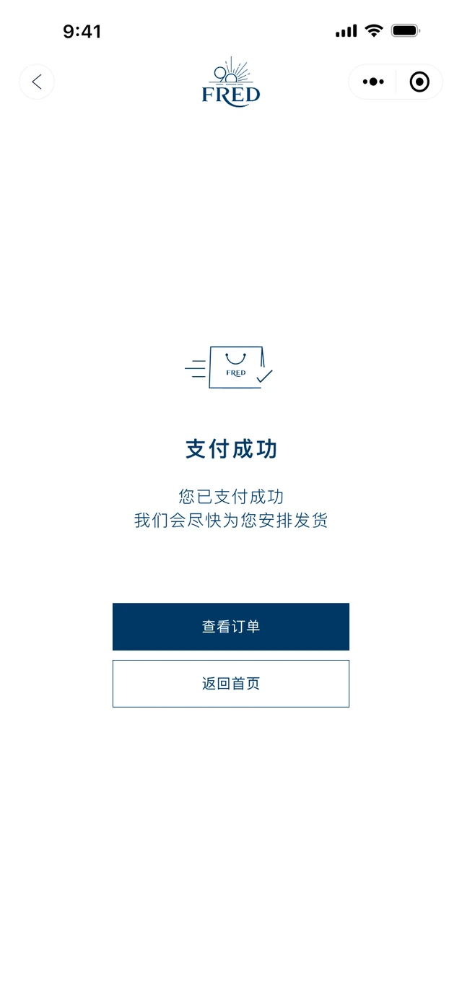
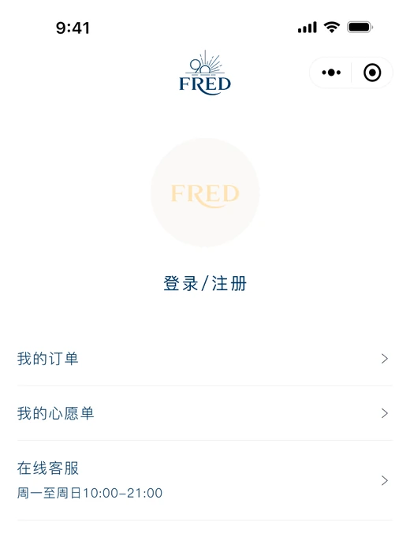
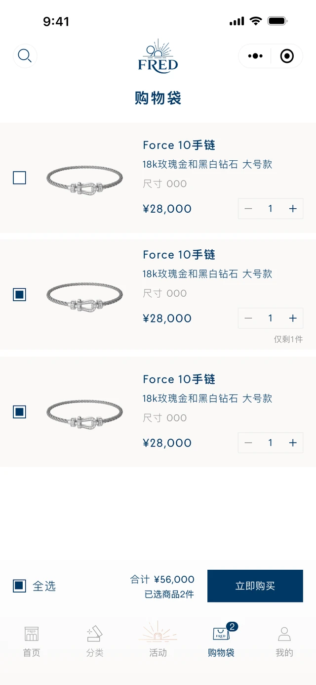
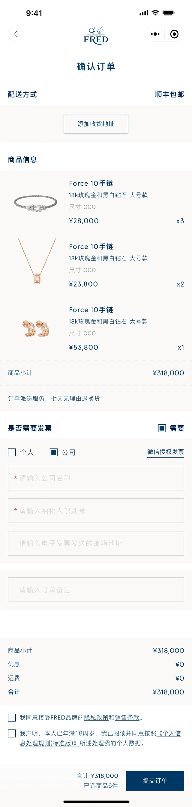
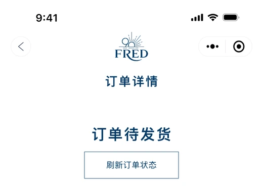
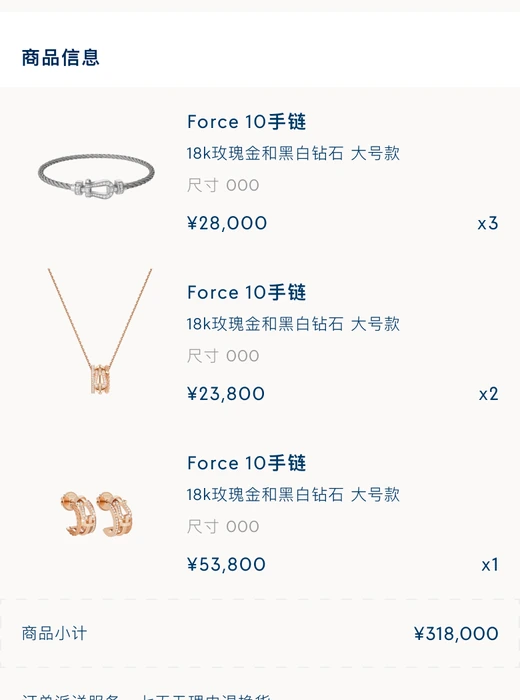
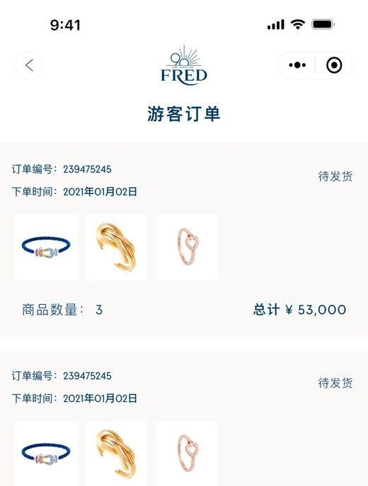
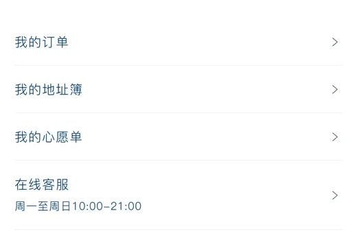
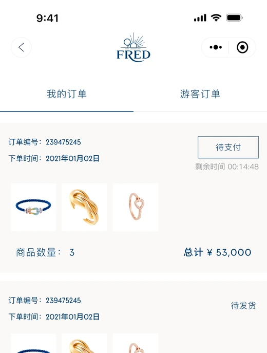

FRED · 微信小程式
FRED 小程式｜訪客下單體驗設計
讓不想註冊會員的顧客也能在微信小程式下單，並且在付款後知道去哪裡查訂單。
購買及查單設計按期交付，通過客戶驗收。
- 專案
- IT Consultis 客戶專案
- 我的職責
- 訪客下單流程與介面設計
- 交付
- 購物流程及關鍵頁面設計稿


設計稿互動重現
不註冊，怎麼買完這件首飾？
從商品頁發起購買
顧客已經選好了 Force 10 戒指。點選購買，身分選擇會出現在商品頁上。

決定以誰的身分結帳
訪客入口就在登入按鈕下方。顧客做出選擇時，仍看得見剛挑好的商品。
驗證下單手機號碼
這個號碼會把本次購買和日後的訪客查單連起來。示範使用同一個虛構號碼。
先看訂單，再補配送資料
商品和金額已隨購買動作帶入。還缺的收件地址直接在配送欄補上。

選用範例地址
原稿同時提供微信地址和手動填寫入口。這裡用一筆虛構地址示範填妥後的狀態。
送出前核對
核對款式、金額和收件地址，勾選條款後即可體驗付款結果。
沿用會員已有的配送資料
已登入的會員可直接核對已儲存的地址。勾選條款後，體驗同一筆範例購買的付款結果。

會員付款成功
從成功頁可直接進入這筆訂單的詳情。
已付款，接下來怎麼查？
立刻查看可以利用當前交易；稍後回來則需要重新確認查詢身分。

從個人中心回來
訪客可以從「我的訂單」開始，不必先找註冊入口。

用下單手機號查詢
選擇示例號碼，模擬以原下單手機號查詢。此演示在本頁使用虛構資料。
確認查詢身分
示例號碼已帶入。點擊查詢即可查看訪客訂單。
選擇一筆訂單
先比對商品與狀態，再打開需要的交易。
抵達訂單詳情
兩條路徑在詳情頁匯合。顧客能確認訂單狀態，也可返回體驗另一條路。
設計取捨
註冊是可選的，找回訂單則需要穩定的線索。我把會員身分選擇放在購買節點，讓訪客用下單手機號碼銜接付款後的查詢。
走查時我會看什麼
我會分別走完訪客和會員的結帳路徑，檢查商品是否一直保留、何時要求補地址，再從付款成功頁和回訪入口分別找回訂單。
主頁面展示
從品牌探索到商品選擇
先看完整的小程式介面，再進入訪客下單的設計重點。首頁與系列導航承接品牌探索，商品列表、篩選與詳情銜接選購，購物袋彙整待購商品。

品牌首頁
以品牌影像和系列入口開啟探索。

系列導航
集中展示不同珠寶系列，方便切換瀏覽方向。
商品列表
以商品卡片、分類與價格承接選購。

篩選面板
按材質、顏色等條件縮小選擇範圍。
商品詳情
呈現商品、規格與價格，銜接購買操作。


購物袋
集中核對已選商品、數量與金額。
對照使用者旅程
對照訪客與已登入使用者完成購買、找回訂單的過程。身分處理發生在結帳和查單兩個節點，後續任務沿用相同的頁面結構。
下單旅程
共同入口 商品詳情或購物袋
訪客
-
結帳身分
訪客結帳
在身分彈層選擇以訪客身分結帳，再完成手機號碼驗證。
-
確認訂單

填寫配送資訊
新增收件地址，核對商品和金額，再提交訂單。
-
付款回饋
付款成功
收到付款成功回饋，可立即點擊「查看訂單」。
-
進入訂單

查看這筆訂單
從付款結果進入詳情，確認訂單狀態和商品。
已登入使用者
-
結帳身分
直接進入結帳
從商品詳情或購物袋發起購買，沿用目前的登入狀態。
-
確認訂單

確認訂單資料
檢查已有配送資訊、商品和費用，按需修改後提交。
-
付款回饋
付款成功
透過同一付款結果頁繼續查看訂單。
-
進入訂單
查看這筆訂單
在訂單詳情確認狀態和商品。
查單旅程
共同入口 「我的」→「我的訂單」
訪客
-
進入訂單頁
進入「我的訂單」
訪客也可以從個人中心開啟訂單頁。
-
確認查詢身分
切到「訪客訂單」
輸入下單手機號碼，或透過微信授權取得手機號碼後查詢。
-
瀏覽結果

查看訪客訂單列表
核對商品與狀態，找到要查詢的訂單。
-
查看詳情
開啟訂單詳情
查看訂單狀態、商品與配送資訊。
已登入使用者
-
進入訂單頁

從個人中心進入
透過「我的訂單」入口查看帳號訂單。
-
確認查詢身分
我的訂單訪客訂單沿用登入身分
「我的訂單」直接顯示帳號訂單。也可切換到「訪客訂單」查詢訪客購買紀錄。
-
瀏覽結果

查看帳號訂單列表
瀏覽訂單卡片並選擇需要查看的訂單。
-
查看詳情
開啟訂單詳情
查看訂單狀態、商品與配送資訊。
訪客下單流程
保留會員入口的同時，怎樣讓沒有帳號的顧客完成購買、找回訂單？
在購買節點提供兩種結帳方式
從商品頁發起購買時，底部彈層提供「微信授權登入」和「以訪客身分結帳」兩個入口。微信登入是主按鈕，訪客選項緊接在下方，顧客可以在同一個彈層決定是否登入。
- 保留購買情境
- 彈層覆蓋在商品詳情頁上，顧客做出選擇時仍能看見剛選中的商品。
- 把會員註冊與手機號碼驗證拆開
- 訪客跳過會員註冊。手機號碼透過獨立的驗證彈層處理，介面提供微信授權手機號碼的入口。
用訂單確認頁銜接訪客結帳
訪客進入確認訂單後補充收件地址。地址頁提供微信地址授權和手動填寫兩種方式，顧客可以按自己的情況選擇。
- 按需展開表單
- 確認頁先呈現配送和商品資訊。需要發票時再顯示個人或公司選項，公司發票顯示公司名稱和納稅人識別號等欄位。
- 在提交前確認關鍵資訊
- 彙整商品小計、優惠、運費和應付金額，把條款確認放在提交訂單前。
付款後立即查，也能日後回來查
付款成功頁把「查看訂單」設為主要操作，顧客可以立即確認這筆訂單。日後可以從訂單頁切到獨立的「訪客訂單」頁籤，透過下單手機號碼查詢。
- 區分會員和訪客的查詢入口
- 訂單頁並列「我的訂單」和「訪客訂單」。訪客可以手動輸入手機號碼，也可以透過微信授權取得手機號碼。
專案交付
我以競品購買流程為參照，和客戶對齊訪客結帳及訂單查詢所需的頁面與狀態，再推進設計交付。設計按期交付並通過客戶驗收。